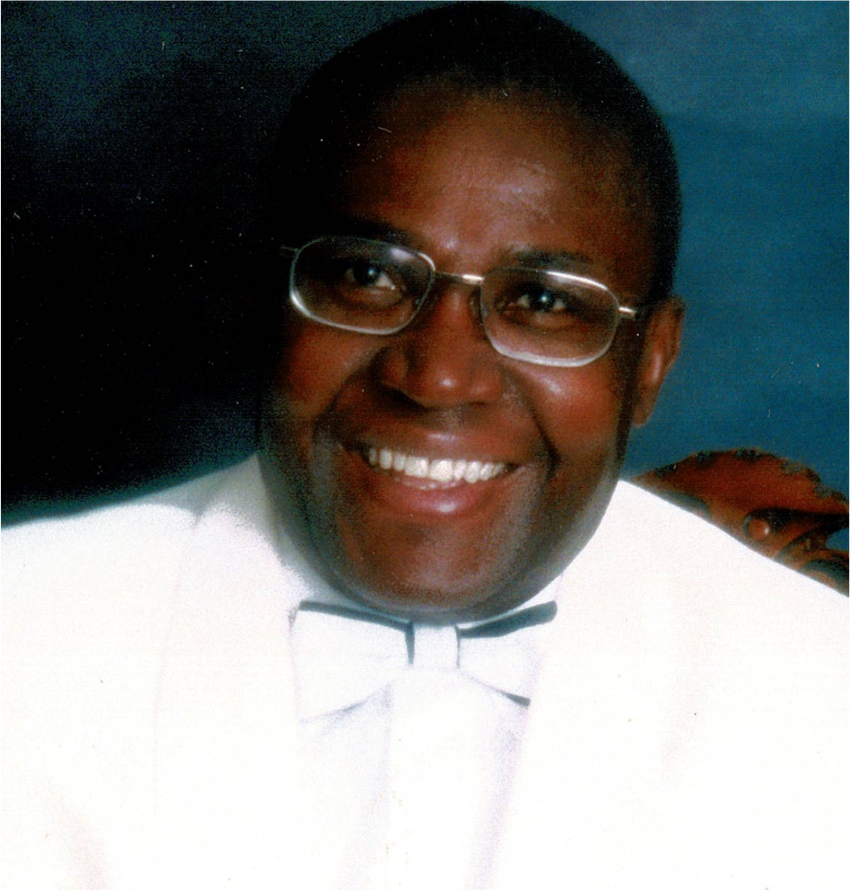

Health promotion & education
Empowering individuals & community groups through health education
Since 2004, Dr Bassey Kubiangha Education has worked within the community in Calabar (Cross Rover State, Nigeria) to provide resources to local community organisations, facilitate health education events and support medical students at the University of Calabar.

About us Programmes & Resources EventsDr Bassey Kubiangha Education Trust is a registered charity in England and Wales (1107107)